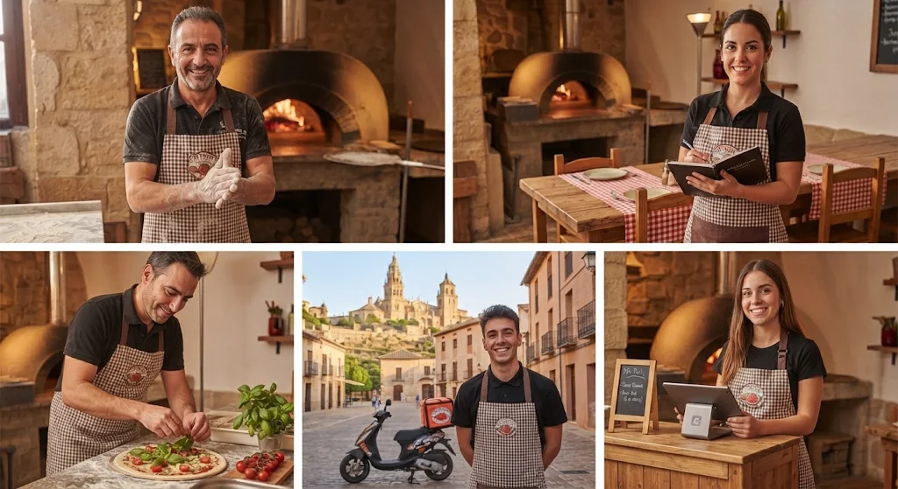

Conoce a las personas que hacen posible cada pizza en Don Tomate, Caravaca de la Cruz.

Maestro pizzero y fundador
Lleva más de quince años trabajando masas y hornos de leña. Es quien vigila la fermentación de la masa madre y el punto exacto de cocción de cada pizza.
Encargada de sala
Coordina las mesas del local, atiende las reservas y se asegura de que todo salga a tiempo y con buen ambiente.
Jefe de cocina y preparaciones
Se encarga de triturar el tomate natural, preparar las salsas caseras y tener listos los entrantes y los ingredientes frescos cada tarde.
Atención al cliente y caja
Recibe a los clientes en el local, gestiona los pedidos para recoger y resuelve cualquier duda o alergia alimentaria.
Reparto a domicilio
Conoce todas las calles de Caravaca de la Cruz y se encarga de que los pedidos lleguen calientes a casa.